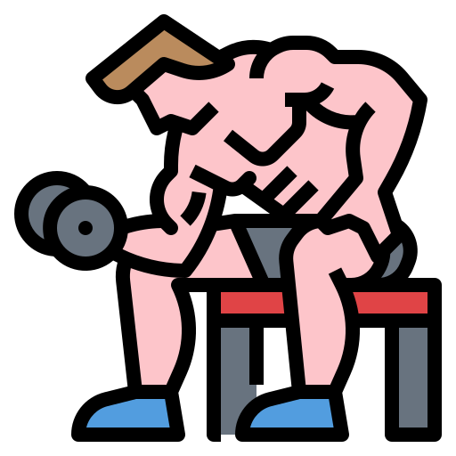

Why Are Carbohydrates Important?

Main Energy Source
Carbohydrates provide the energy your body needs for workouts, everyday activities and normal body functions.

Improves Performance
By eating enough carbohydrates helps you train harder, lift heavier weights and improve your overall performance.
Supports Recovery
Carbohydrates replace glycogen stores after exercise which helps your muscles recover faster and prepare for your next workout.

Supports Brain Function
Your brain relies on glucose from carbohydrates to stay focused, think clearly and concentrate throughout the day.